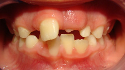

seo content to go here
Having completed over 3,000 hours of advanced training in orthodontics, Dr. Lind has had the opportunity to study many different approaches and treat thousands of patients of all ages. He is also a member of the International Association of Orthodontics and the American Association for Functional Orthodontics.
Due to his wealth of experience, Dr. Lind can diagnose orthodontic problems starting as young as three to five years of age (Early Treatment) and help prevent crooked teeth, crossbites and other problems before they start.
While Dr. Lind is excellent with children, and we do treat many kids who need braces, a full third of our orthodontics are provided to adults who want to straighten their teeth. Dr. Lind uses traditional braces as well as Bioliners and Invisalign, both invisible solutions, to correct misaligned teeth.
With his extensive experience in orthodontics, Dr. Lind works with adults, teens and children and can handle even the most advanced cases right in the comfort of our office. Whether you’re a parent wondering about straightening your child’s teeth or an adult looking to straighten your smile, Dr. Lind would be happy to see you about your orthodontic needs.
To schedule an appointment with Dr. Lind, please call us at (208) 846-8847 or request an appointment online.
Dr. Lind prefers to see children as early as 3 to 6 years old.
There are specific measurements and growth patterns that Dr. Lind looks for to better predict how the mouth and teeth are developing. Many future bite problems and even crooked teeth are foreshadowed by how the jaw and the muscles in the face are growing at an early age.
The biggest benefit of early treatment is the use of a simple device (similar to a retainer) which can help correct jaw and alignment problems before the permanent teeth have a chance to grow in. This gives a much better chance to reduce the need for extensive orthodontic treatment, and in fact reduces the amount of time the child will have to wear braces by as much as 50%.
Early treatment is also much less costly than braces, which is something our parents greatly appreciate.
You can learn more about early treatment by reading Dr. Lind's article Orthodontics and Orthopedics.
For most of our patients, orthodontic treatment starts between the ages of 11 and 14.
There is no substitute for quality work when it comes to straightening your child’s teeth and giving him a comfortable healthy bite. Properly done, braces will set your child up for a life of healthy teeth and gums and plenty of beautiful, confident grins.
Coming to Dr. Lind for braces has the added benefit that any other treatment (such as fillings, sealants, cleaning and eventually wisdom teeth) can also be done right in our office.
Dr. Lind is great with kids - he always does his best to make them laugh and help them learn to enjoy going to the dentist.
We offer a complimentary consultation so that you can find out what treatment your child will need, how long it will take and what results Dr. Lind can accomplish.
To schedule an appointment with Dr. Lind, please call us at (208) 846-8847 or request an appointment online.
More and more adults these days are opting for orthodontic treatment. Overcrowded, misaligned or crooked teeth may make you self-conscious about your smile. They also can present serious health issues, as the teeth are more difficult to clean and more likely to have decay and bone loss.
Each person's mouth is unique, and it's important to choose the best treatment plan to make sure that you get the results that you want.
Schedule a consultation with Dr. Lind today to find out about the best treatment plan for you!
To schedule an appointment with Dr. Lind, please call us at (208) 846-8847 or request an appointment online.
Dr. Daron Lind offers the Bioliner and Invisalign systems as an alternative to traditional braces. Bioliners can straighten your teeth using a series of clear, custom, removable aligners. Each aligner moves your teeth just a little bit at a time until your teeth are eventually straight. This can also be a great solution for people who need to move a few of their teeth or correct small issues with their bite.
Busy adults and teens are often worried that braces will interfere with their lives. With Bioliners, you can have the straight smile that you have always wanted, without metal braces, and while you keep on doing everything you love to do.
Bioliners are a clear alternative to braces.
Bioliners teeth aligners have been used to correct:
Dr. Lind will examine your smile, and determine if Bioliners will work for you. Next, he will take impressions of your teeth, and send them to the Bioliners lab. There your custom prescription aligners are made and sent back to our office.
About every 2 weeks you’ll receive a new set of aligners. The aligners are made of ultra-thin clear plastic and they are barely noticeable. With each new prescription aligner, you’ll see progress until your teeth are eventually straight.
Come in for a consultation and find out if Bioliners are right for you!
To schedule an appointment with Dr. Lind, please call us at (208) 846-8847 or request an appointment online.
Here are answers to some of the questions that we hear from our new patients. For more information, feel free to call us at (208) 846-8847.
When should my child see Dr. Lind about braces?
How long will my child have to wear braces?
Can my child continue to play sports while wearing braces?
What financing options do you have available?
Braces work by applying continuous pressure over a period of time to slowly move teeth in a specific direction. As the teeth move, the bone changes shape as pressure is applied. The teeth are moved specifically, according to careful adjustments by Dr. Lind, in order to align the jaw, improve the bite, reduce crowding, correct spacing, and straighten teeth. Over time, braces will improve your smile and correct other problems that crowded or misaligned teeth can create, including increased chance of tooth decay and tooth loss, chewing difficulties, and speech impediments.
To schedule an appointment with Dr. Lind, please call us at (208) 846-8847 or request an appointment online.
Dr. Lind prefers to see children between the ages of 3-6 for early treatment, but braces themselves are usually done just before they hit their teens. The best time to use braces to straighten a child’s teeth is during a major growth spurt, such as occurs during puberty. At that time a child’s bones are fairly pliable, and it is easier to align the teeth rapidly.
To schedule an appointment with Dr. Lind, please call us at (208) 846-8847 or request an appointment online.
The time required for braces to complete their job varies from person to person. Factors affecting the length of time that your child will need to wear braces include the severity of the problem you are correcting, the amount of room available, the distance the teeth must travel, the health of the teeth, gums, and supporting bone, and how closely your child follows instructions. On average, however, once the braces are put on, they usually remain in place for 6 to 24 months. After braces are removed, most patients will need to wear a retainer all the time for the first 12 months, then for part of the time.
It’s fine for your child to continue to play sports after he or she gets braces. When playing sports where there is a possibility of getting hit in the mouth, your child should wear a specially designed mouthguard. The mouth guard, made of durable plastic, is designed to fit comfortably over the braces and protect the soft tissues inside his or her mouth.
| Before | After |
|---|---|
|  |
| Before | After |
|---|---|
Meridian Dentist. Daron Lind provides Family Dentist, Cosmetic Dentist, Dentures, Emergency Dentist, Dental Implants, Root Canal, Veneers to the following locations: Boise, West Boise, Nampa, Boise Dentist providing professional dentistry including family Dentist, Cosmetic Dentist, Dentures, Emergency Dentist, Dental Implants, Root Canal, Vaneers in Meridian, Boise, West Boise, West Boise, Nampa, ldaho